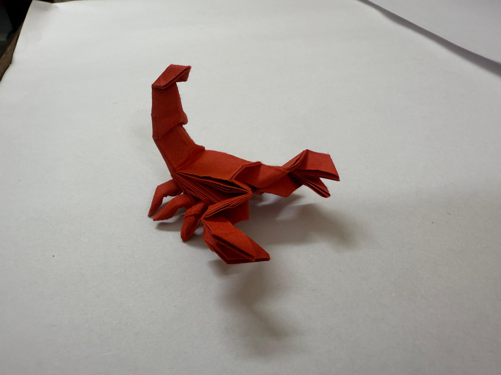
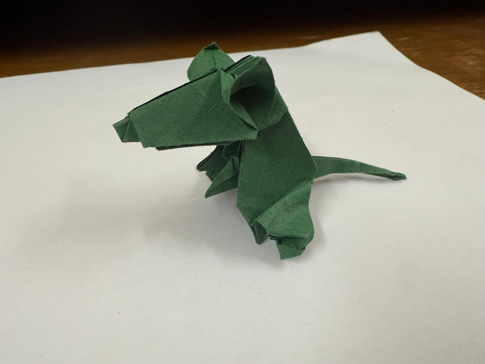
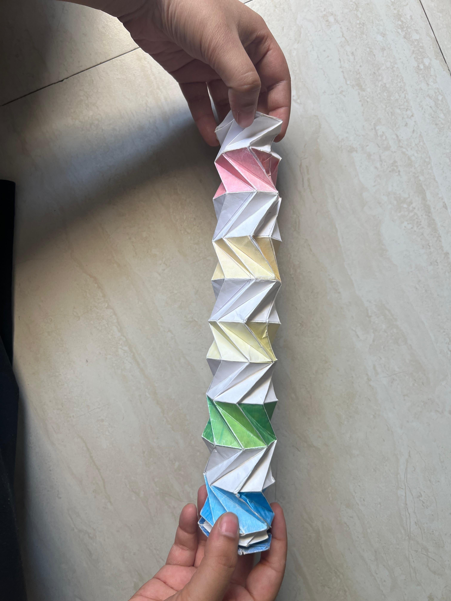
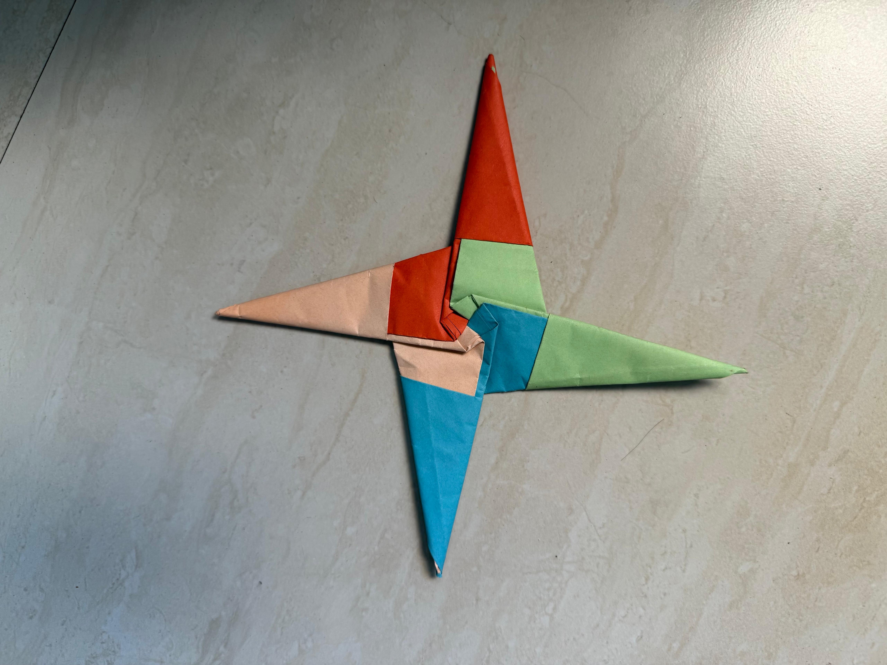

Origami Folds
Models I Folded
These are origami models I folded by following tutorials, templates, and designs by other origami artists. I learned a lot from trying different styles, papers, grids, and moving structures.

Kade Chan / Jo Nakashima
Fiery Dragon
A gold tissue foil dragon folded while on vacation in the mountains
Jo Nakashima
Scorpion
A detailed 3D scorpion made from a 24 × 24 grid
Jeremy Shafer
Supreme Flasher
A deployable flasher model that took several tries to get right
Jeremy Shafer
Flasher Hat
A kinetic flasher model folded from a 16 × 16 grid
Jeremy Shafer
Flasher Top Hat
My first time wet folding, which helped the hat hold a better shape
Jo Nakashima
Mouse
A tiny 3D mouse with a clear body shape and long tail
Tomoko Fuse / Jeremy Shafer
Pako Pako
A transformable model that is really satisfying to open and close
Jeremy Shafer
Exploding Brick
A tessellation-based transformable model that is fun to play with
Origami Fold
Magic Ball
A crease-heavy model that expands, compresses, and moves in your hands
Star Folds
Ninja Stars
A collection of star-based models with different shapes and point counts
Brian Chan
Origami Faces
A Guy Fawkes mask and another face model I folded
Jeremy Shafer